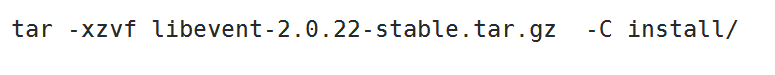

学习目标
- 描述什么是libevent并掌握如何安装
- 掌握event_base的作用和使用方法
- 熟悉掌握libevent库中的事件循环
- 掌握事件的Event使用方法
- 掌握BufferEvent的工作方式
- 掌握使用libenent实现tcp服务器流程
- 掌握使用ibenent实现tcp客户端流程
libevent 核心 以事件触发,自动回调
1 libevent安装
a>解压

b>./configure 检测安装环境,生成makefile
c> make 编译代码
d>sudo make install
安装库的目录在

头文件目录:
/usr/local/include
ubuntu18版本安装是出现 问题
error while loading shared libraries: libevent-2.0.so.5: cannot open shared object file: No such file or directory
解决办法是:sudo ln -s /usr/local/lib/libevent-2.0.so.5 /usr/lib/libevent-2.0.so.5
gcc dem.o.c -o demo -levent
2 event_base结构体
结构体作用就是相当于epoll里面的根节点
struct event_base *event_base_new(void);.//创建event_base结构体
void event_base_free(struct event_base *);//释放event_base结构体
监听事件产生
int event_base_loop(struct event_base *base, int flags);//循环监听
flags的取值：
#define EVLOOP_ONCE 0x01
只触发一次，如果事件没有被触发，阻塞等待
#define EVLOOP_NONBLOCK 0x02
非阻塞方式检测事件是否被触发，不管事件触发与否，都会立即返回
而大多数我们都调用libevent给我们提供的另外一个api：
int event_base_dispatch(struct event_base *base);//循环监听 常用 等价于epoll-epoll_wait
退出循环监听事件
int event_base_loopexit(struct event_base *base, const struct timeval *tv);
int event_base_loopbreak(struct event_base *base);//常用
struct timeval {
long tv_sec;
long tv_usec;
};
libevent 监听流程(lfd cfd)
创建event_base结构体 event_base_new
初始化上树节点
上树监听
循环监听 event_base_dispatch
扫尾 释放event_base结构

4 初始化上树节点
- struct event *event_new(struct event_base *base, evutil_socket_t fd, short events, event_callback_fn cb, void *arg);
功能: 初始化上树节点
参数:
base : event_base结构体地址
evutil_socket_t fd: 要上树监听文件描述符
events : 监听的事件
事件
#define EV_TIMEOUT 0x01 //超时事件
#define EV_READ 0x02 //读事件
#define EV_WRITE 0x04 //写事件
#define EV_SIGNAL 0x08 //信号事件
#define EV_PERSIST 0x10 //周期性触发
#define EV_ET 0x20 //边缘触发，如果底层模型支持
arg: 传递给回调函数 的参数
cb的函数原型
typedef void (*event_callback_fn)(evutil_socket_t fd, short events, void *arg);
返回值: 返回初始化节点的地址
5 上树下树
- int event_add(struct event *ev, const struct timeval *timeout);
功能: 将节点上树
参数:
ev: 上树节点的地址
timeout : 一般写NULL 永久监听
- int event_del(struct event *ev);
功能: 将节点下树
参数: 下树节点的地址
释放节点
- void event_free(struct event *ev);
6 bufferevent 高级事件
普通的event事件 一个文件描述符 一个回调
高级的bufferevent事件 1个文件描述符 2个缓冲区 3个回调

7 event事件和bufferevent事件API比较

8 创建一个bufferevent节点
struct bufferevent *bufferevent_socket_new(struct event_base *base, evutil_socket_t fd, int options);
bufferevent_socket_new 对已经存在socket创建bufferevent事件，可用于后面讲到的链接监听器的回调函数中，参数说明：
base – 对应根节点
fd -- 文件描述符
options – bufferevent的选项
BEV_OPT_CLOSE_ON_FREE -- 释放bufferevent自动关闭底层接口
BEV_OPT_THREADSAFE -- 使bufferevent能够在多线程下是安全的
返回值: 新建节点的地址
释放bufferevent 节点
void bufferevent_free(struct bufferevent *bufev);
9 设置节点的回调
- void bufferevent_setcb(struct bufferevent *bufev,
bufferevent_data_cb readcb, bufferevent_data_cb writecb,
bufferevent_event_cb eventcb, void *cbarg);
bufferevent_setcb用于设置bufferevent的回调函数，readcb，writecb，eventcb分别对应了读回调，写回调，事件回调，cbarg代表回调函数的参数。
回调函数的原型：
读写回调:
typedef void (*bufferevent_data_cb)(struct bufferevent *bev, void *ctx);
事件回调:
typedef void (*bufferevent_event_cb)(struct bufferevent *bev, short what, void *ctx);
What 代表 对应的事件BEV_EVENT_EOF(对应的文件描述符关闭), BEV_EVENT_ERROR(出错)，BEV_EVENT_TIMEOUT(超时), BEV_EVENT_CONNECTED(连接成功)
9 让事件使能或不使能
- int bufferevent_enable(struct bufferevent *bufev, short event);//event
- int bufferevent_disable(struct bufferevent *bufev, short event);
事件:
#define EV_TIMEOUT 0x01 //超时事件
#define EV_READ 0x02 //读事件
#define EV_WRITE 0x04 //写事件
#define EV_SIGNAL 0x08 //信号事件
#define EV_PERSIST 0x10 //周期性触发
#define EV_ET 0x20 //边缘触发，如果底层模型支持
10 读写数据
- int bufferevent_write(struct bufferevent *bufev, const void *data, size_t size);//常用
bufferevent_write是将data的数据写到bufferevent的写缓冲区
- int bufferevent_write_buffer(struct bufferevent *bufev, struct evbuffer *buf);
bufferevent_write_buffer 是将数据写到写缓冲区另外一个写法，实际上bufferevent的内部的两个缓冲区结构就是struct evbuffer。
- size_t bufferevent_read(struct bufferevent *bufev, void *data, size_t size);//常用
bufferevent_read 是将bufferevent的读缓冲区数据读到data中，同时将读到的数据从bufferevent的读缓冲清除。
- int bufferevent_read_buffer(struct bufferevent *bufev, struct evbuffer *buf);
11 连接侦听器
tcp服务器实现流程
创建套接字
绑定
监听
提取
连接侦听器把以上4步全做了
struct evconnlistener *evconnlistener_new_bind(struct event_base *base,
evconnlistener_cb cb, void *ptr, unsigned flags, int backlog,
const struct sockaddr *sa, int socklen);
函数功能: 创建一个连接侦听器
参数:
base : 根节点
cb : 提取新的连接之后要回调的函数
ptr::传给回调函数的参数
flags :
LEV_OPT_LEAVE_SOCKETS_BLOCKING 文件描述符为阻塞的
LEV_OPT_CLOSE_ON_FREE 关闭时自动释放//常用
LEV_OPT_REUSEABLE 端口复用
LEV_OPT_THREADSAFE 分配锁，线程安全
backlog: listen连接队列的长度 -1 自动选择 如果填0,代表这里不需要做listen,在外面做了
sa: 绑定的地址信息结构体
socklen: sa结构体的长度
返回值:返回的是连接侦听器的地址
回调函数:
typedef void (*evconnlistener_cb)(struct evconnlistener *evl, evutil_socket_t fd, struct sockaddr *cliaddr, int socklen, void *ptr);
evl: 连接侦听器地址
fd: 提取的新的连接的套接字cfd
cliaddr: 提取新的联系的地址信息
socklen: cliaddr的结构体长度
ptr: evconnlistener_new_bind函数传入的
释放连接侦听器和使连接侦听器使能
void evconnlistener_free(struct evconnlistener *lev);
释放链接监听器
int evconnlistener_enable(struct evconnlistener *lev);
使链接监听器生效
#define evsignal_new(b, x, cb, arg) \
event_new((b), (x), EV_SIGNAL|EV_PERSIST, (cb), (arg))
struct event *event_new(struct event_base *base, evutil_socket_t fd, short events, event_callback_fn cb, void *arg);
连接服务器
int bufferevent_socket_connect(struct bufferevent *bev, struct sockaddr *serv, int socklen);
bufferevent_socket_connect封装了底层的socket与connect接口，通过调用此函数，可以将bufferevent事件与通信的socket进行绑定，参数如下：
bev – 需要提前初始化的bufferevent事件
serv – 对端的ip地址，端口，协议的结构指针
socklen – 描述serv的长度
12 bufferevent实现tcp客户端流程
创建套接字
可以不绑定
连接
创建base根节点
初始化节点 sockerfd stdin
将节点上树监听
循环监听
扫尾